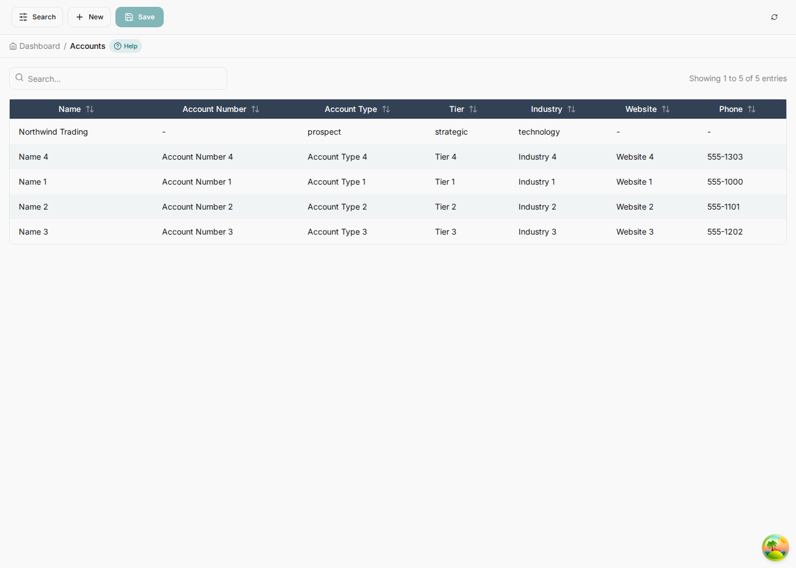
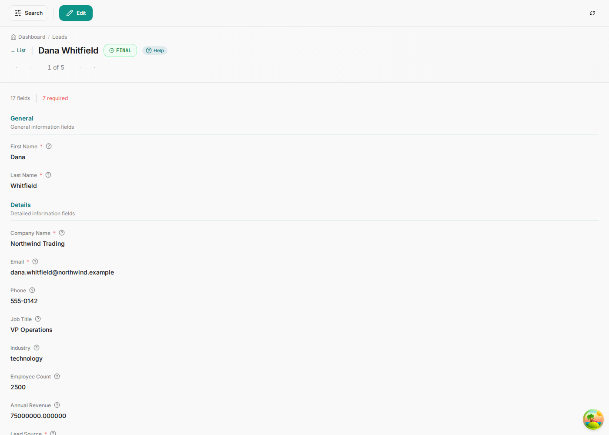
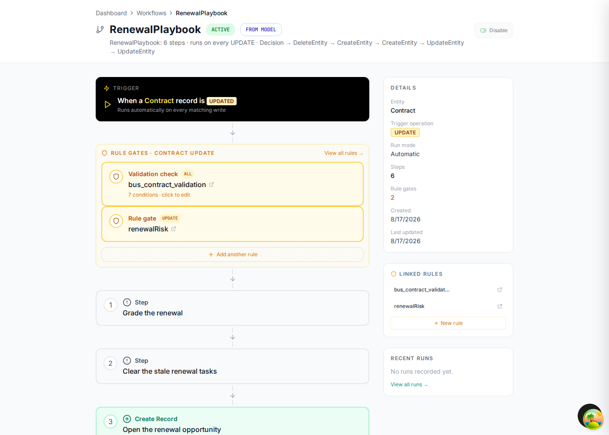

Watch the model run
One user action — changing a lead's status to qualified — fires a rule, which fires an action, which starts a saga, which evaluates a decision table and writes rows into three other tables. This chapter follows that chain end to end and shows you where to look when it does not happen.
The chain, before we walk it
| # | What runs | Declared in the model as |
|---|---|---|
| 1 | A user sets status = qualified | a value of %%enum LeadStatus |
| 2 | leadQualification evaluates | %%rule … on Lead event: beforeUpdate |
| 3 | Its action fires | %%action … trigger-workflow when: status == "qualified" |
| 4 | LeadConversion starts | %%workflow … kind: saga trigger: rule |
| 5 | A decision table sizes the account | %%step B Decision |
| 6 | Account, Contact, Opportunity created | three %%step … CreateEntity |
| 7 | The lead is marked converted | %%step F UpdateEntity |
| 8 | The account's tier is stamped | %%step G UpdateEntity … targetSource |
Walk it
-
Note where you are starting
Four accounts, four contacts, four opportunities — the seeded sample data.
sqlselect count(*) from bus_account; -- 4 select count(*) from bus_contact; -- 4 select count(*) from bus_opportunity; -- 4 -
Create a lead worth converting
New → fill it in. The values that matter downstream are score 88, which the decision table reads, and an owner, which every created row inherits. Status starts at
new.A new lead. Seventeen fields, seven required. The form knows which is which from the model's OPTIONALmodifiers.
-
Qualify it
Edit → set Status to qualified → Save Changes. That is the entire user action.
-
Count again
sqlselect count(*) from bus_account; -- 5 ← new select count(*) from bus_contact; -- 5 ← new select count(*) from bus_opportunity; -- 5 ← new select status from bus_lead where email = 'dana.whitfield@northwind.example'; -- converted
beforeCreate hook mints it, and that hook is yours to
write.


The receipt
Every run is recorded, with the mutations it applied. This is the first place to look when you want to know what a workflow actually did rather than what you think it did.
select workflow_name, operation, status, mutations_applied
from sys_workflow_runs
order by created_at desc
limit 1;[
{ "nodeType": "Decision",
"published": { "accountTier": "strategic",
"openingAmount": 250000,
"openingAccountType": "prospect" },
"matchedRows": 1 },
{ "nodeType": "CreateEntity", "table": "bus_account",
"boundTo": "newAccountId", "createdId": "0f81028e-…" },
{ "nodeType": "CreateEntity", "table": "bus_contact",
"values": { "account_id": "0f81028e-…", … } },
{ "nodeType": "CreateEntity", "table": "bus_opportunity",
"values": { "amount": 250000, "stage": "prospecting", … } },
{ "nodeType": "UpdateEntity", "table": "bus_lead",
"field": "status", "value": "converted", "rowsAffected": 1 },
{ "nodeType": "UpdateEntity", "table": "bus_account",
"field": "tier", "value": "strategic",
"matchedOn": "id=0f81028e-…" }
]Step G updated a row created by step C, matched on the id step C published. That is the shared context doing its job — and it is the difference between a workflow that can only touch what it started from and one that can run a process.
The same run list is in the app: open the workflow in the designer and its recent runs are in the sidebar.

When the chain does not fire
Work down this list in order. Each check rules out one link, and the first four cover almost everything.
| Symptom | Look at | Usually |
|---|---|---|
| Nothing happened at all | select * from sys_workflow_runs order by created_at desc |
No run means the rule never fired. Check the %%action's when: against the record you actually saved. |
Run exists, status failed |
Its error_details |
A required column no step supplied. NOT NULL violations here are a modelling bug: mark the column OPTIONAL if a hook mints it, or set it in the step's fields. |
| Rule triggers the wrong workflow, or none | The rule editor's coverage check | No catch-all row, so a record fell through the table and matched nothing. |
| Record stuck on Draft | The record's status message | A validation-error action or a customValidate hook refused the write. Working as designed — read the message. |
| A step silently did nothing | mutations_applied for that node |
A Decision that matched no row publishes nothing, and later steps that would have read its variables skip themselves. |
| Cross-entity step refused | The step's directive | An entity: with neither targetSource nor targetField. The executor refuses rather than guessing a row. |
| The backend log | [RulesEngine] and [WorkflowService] lines |
They name the rule, the workflow and the failure verbatim — quicker than any of the above. |
The generator emits an end-to-end suite alongside the app. bun run test:e2e:fast exercises
the API, the rules and the workflows without the bulk-seed volume tests — the fastest way to know a
model change did not break a process you already had working.
What to try next
- Change a threshold. Move the strategic band in step B's decision table from 85 to 95, regenerate, re-seed, convert another lead — the tier changes.
- Add a step. Give
LeadConversiona seventh step that creates an onboarding Activity against the new account, usingtargetSource: newAccountId. - Gate it differently. Change the action's
when:to fire only forscore >= 70, and watch a low-scoring lead qualify without converting. - Write a hook body. Fill in
assignAccountNumberinbackend/src/modules/hooks/handlers/Account.tsand the blank Account Number column fills itself in.